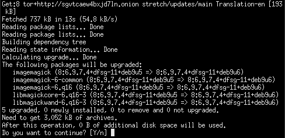
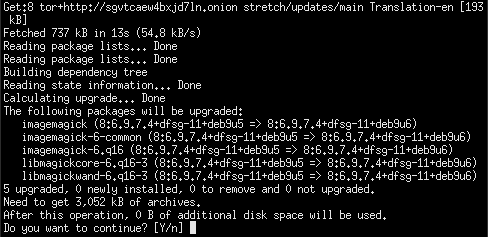

imagemagick is in whonix-ws , and surprisingly its as well inside whonix-gw ?

wonder why we need in WS since we have gwenview? , and why need it in GW?
maybe long time packages which installed by default similar to VLC,sound packages in GW…

imagemagick is in whonix-ws , and surprisingly its as well inside whonix-gw ?

wonder why we need in WS since we have gwenview? , and why need it in GW?
maybe long time packages which installed by default similar to VLC,sound packages in GW…
Same reason. Can’t fix.
For the future please only look only at
https://github.com/Whonix/anon-meta-packages/blob/master/debian/control.
If it can’t be changed there, it can’t be done.
not sure if imagemagick listed there…
if we rebuild Whonix-GW and/or WS from scratch , like bringing debian cd/cli version (or any smaller version), then building whonix at top of it wouldnt that solve the issue of having not needed/duplicate software?
TNT BOM BOM:
not sure if imagemagick listed there…
Use the search function of the browser or copy to a text file and use
the search function of the editor.
if we rebuild Whonix-GW and/or WS from scratch , like bringing debian cd/cli version (or any smaller version), then building whonix at top of it wouldnt that solve the issue of having not needed/duplicate software?
No.
actually thats what i meant … so yeah imagemagick is not there.
It seems Imagemagic from things that someone should have but useless on the same time, i dunno which package really needs it and why?
Whonix-GW-15:
user@host:~$ sudo apt remove --purge imagemagick*
Reading package lists... Done
Building dependency tree
Reading state information... Done
Note, selecting 'imagemagick' for glob 'imagemagick*'
Note, selecting 'imagemagick-6.q16hdri' for glob 'imagemagick*'
Note, selecting 'imagemagick-6.q16' for glob 'imagemagick*'
Note, selecting 'imagemagick-doc' for glob 'imagemagick*'
Note, selecting 'imagemagick-6.defaultquantum' for glob 'imagemagick*'
Note, selecting 'imagemagick-6-doc' for glob 'imagemagick*'
Note, selecting 'imagemagick-common' for glob 'imagemagick*'
Note, selecting 'imagemagick-6-common' for glob 'imagemagick*'
Note, selecting 'imagemagick-6.q16' instead of 'imagemagick-6.defaultquantum'
Package 'imagemagick-6-doc' is not installed, so not removed
Package 'imagemagick-6.q16hdri' is not installed, so not removed
Package 'imagemagick-common' is not installed, so not removed
Package 'imagemagick-doc' is not installed, so not removed
The following packages were automatically installed and are no longer required:
dconf-cli ethtool initscripts insserv keyboard-configuration libde265-0
libegl1-mesa libfftw3-double3 libheif1 libimagequant0 liblqr-1-0
libqubes-rpc-filecopy2 libqubesdb libxfont2 libxkbfile1 python-daemon
python-dbus python-gi python-gi-cairo python-lockfile python-pil
python-qubesdb python-xdg python3-cffi-backend python3-numpy python3-pil
python3-xcffib qubes-utils qubesdb qubesdb-vm rsync startpar sysv-rc
x11-xkb-utils xen-utils-common xenstore-utils xinit xserver-common
xserver-xorg-core xserver-xorg-input-qubes xserver-xorg-video-dummyqbs
Use 'sudo apt autoremove' to remove them.
The following packages will be REMOVED:
imagemagick* imagemagick-6-common* imagemagick-6.q16* libmagickcore-6.q16-6*
libmagickwand-6.q16-6* qubes-core-agent* qubes-core-agent-networking*
qubes-gui-agent* qubes-vm-dependencies* qubes-whonix* qubes-whonix-gateway*
0 upgraded, 0 newly installed, 11 to remove and 0 not upgraded.
After this operation, 11.4 MB disk space will be freed.
Do you want to continue? [Y/n]
and their security development unbelievable:
https://tracker.debian.org/pkg/imagemagick
66 security issues in jessie
7 security issues in sid
7 security issues in buster
61 security issues in stretch
cc @HulaHoop
Imagemagick libs are core programs used for viewing and converting image formats on Linux. Ripping it out will break image format support on Linux just like removing gstreamer will kill audio playback.
Can’t be done. Don’t worry too much about the software running in a VM. If it is not a critical program like Tor or apt, it can’t do much harm.
Im using plain Debian+XFCE , it has no imagemagick dependencies nor its there. Everything working normal.
Thats correct but have you seen the amount of security tickets in their debian repo? any security flaw can be a security breach and do as much harm as the apt or Tor …etc.
if its needed and not an extra package will be ok to digest , but as i can see from XFCE dependencies its just an extra package.
Phew thanks everyone for this thread. I also went over to Github to peek the entries made…
Please do kindly update this thread upon further decision if a user should ignore the presence of imagemagick in the gateway client. TIA
In the interim, should I perhaps do an apt-mark hold imagemagick to bypass the updates being offered by the repo update?
I do appreciate recommendations from my more astute and wiser Whonix elders 
Thank you in advance. 
This isn’t up to Whonix. Should be directed at Qubes support. As per What to post in this Qubes-Whonix forum and what not.